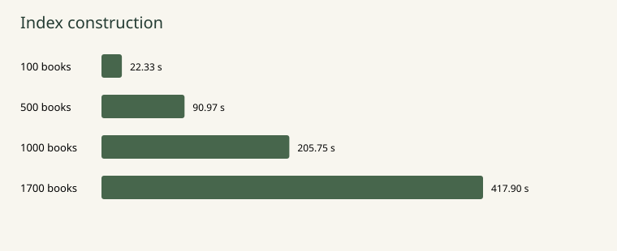
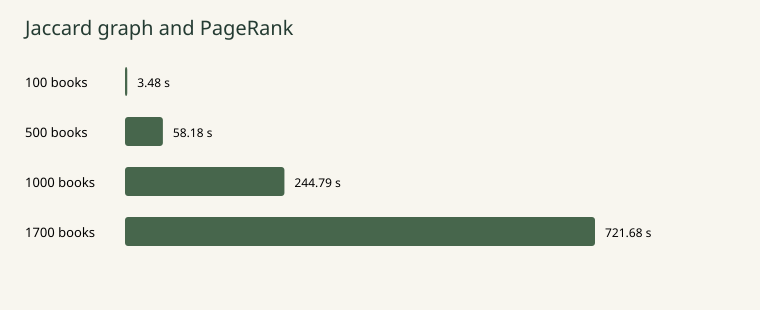
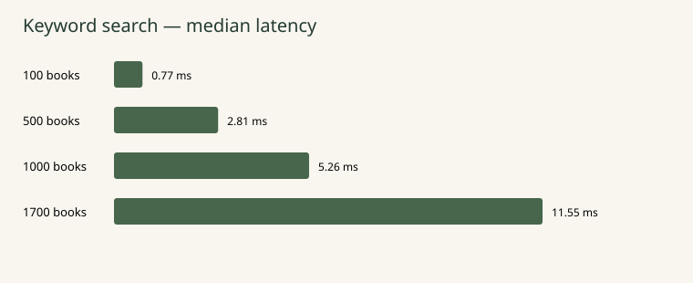
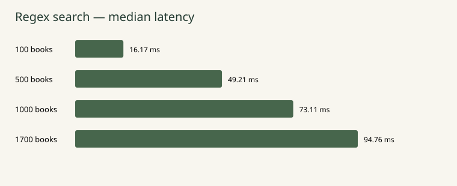

Keyword and regular-expression retrieval, occurrence-weighted document graphs, PageRank and recommendations
Team: Pending — actual 2–3 member names required
Review date: 20 October 2026
Margin is a browser application backed by a Python server and an SQLite inverted index. Its prepared collection contains 1,700 Gutenberg books and 133,587,611 normalized word tokens. Users search by one keyword or by a regular expression matching indexed words. Results can be ordered by occurrence count or PageRank, and graph neighbors provide further reading suggestions.
The graph implements the occurrence-weighted shared-word formula printed in DAAR Lecture 3. A custom Thompson NFA provides the advanced-search engine. Collection, indexing and graph construction occur before serving searches. The runtime application requires Python 3.10 or later and no third-party packages.
Saved scaling experiments cover 100, 500, 1,000 and 1,700 books. On the full collection, the recorded median engine latency is 11.55 ms for the selected keyword queries and 94.76 ms for the selected regex queries. These timings exclude HTTP and rendering. A fresh HTTP experiment confirms the cost of concurrent requests and the server's two-active-search limit. Automated correctness is established within the tested cases; human relevance and physical-device usability require separate evidence.
2: architecture and choices · 3: corpus and index · 4: keyword retrieval · 5: regular expressions · 6: graph · 7: centrality and recommendations · 8: test methodology · 9–10: measured performance · 11: human/client evaluation · 12: conclusions and references.
The assignment requires a searchable collection, explicit keyword and advanced search, implicit ordering, and implicit recommendations [1]. A reader should be able to enter a word, compare ordering methods, navigate results and open an original book. A second user story is to express alternatives or word families with a regex, see the matching vocabulary, and understand an invalid expression without losing the page.
The design separates expensive preparation from request handling. Source texts remain on disk; normalized counts, metadata, graph edges and scores are stored in SQLite. The server exposes /api/stats and /api/search, and serves three static UI assets and a favicon. The browser submits queries asynchronously and renders result cards, pagination and recommendations.
| Choice | Alternative | Reason and tradeoff |
|---|---|---|
| Python standard library | Framework such as Django | Small local demo with no runtime installation step; routing and validation remain explicit. |
| SQLite | Separate database server | Persistent indexed tables without a service to administer; a separate service would better support a larger deployment. |
| Plain HTML/CSS/JS | Frontend framework | One principal search view needs little client state; no build step, at the cost of manual DOM updates. |
| Custom NFA | Library regex engine | Makes the course algorithm inspectable; supports a deliberately limited grammar. |
SQLite's published guidance supports its use behind an application server while identifying workloads needing a client/server database [6]. The app is a trusted LAN demonstration, without accounts, public hosting or a production deployment claim.
Actual automated browser captures. These establish rendered views, not original design sketches or a physical phone test. No original early wireframes were found in this workspace.
The collection pipeline reads Gutenberg's CSV catalog, retains eligible English texts, and downloads plain text from an official mirror. It resumes saved work rather than discarding accepted books. Each retained document must contain at least 10,000 normalized word tokens after wrapper removal. Downloads are sequential with a default two-second delay, bounded response sizes and retries. A refusal from the mirror stops collection. Bulk acquisition should follow Gutenberg's current robot-access policy [5].
| Current indexed corpus | Value |
|---|---|
| Books / distinct content digests | 1,700 / 1,700 |
| Total normalized tokens | 133,587,611 |
| Shortest book | 10,021 tokens |
| Distinct indexed terms | 522,166 |
| Graph edges | 310,714 |
Original downloaded texts retain their Gutenberg wrappers. Indexing removes the recognized start/end wrapper, normalizes newlines to LF and Unicode to NFC, then case-folds and normalizes curly apostrophes. Tokens consist of Unicode letter sequences with optional internal apostrophes; digits and underscores are excluded. Book length counts tokens including repetitions. A vocabulary of 7,000 words is therefore different from a 70,000-token book.
SHA-256 over canonical cleaned content rejects exact duplicates. This procedure does not identify alternative editions or translations of the same literary work. The code repairs legacy Windows newline conversion so that collecting and indexing use the same canonical digest. A saved source verification reports no digest or wrapper issues; the fresh database check validates postings totals but does not repeat all source-file tokenization.
The retained English corpus is a convenience collection shaped by catalog order, availability, minimum length and initial classic-book seeds. It is not a random sample of literature. The scaling subsets are nested and ordered by Gutenberg ID. Consequently, increasing corpus size also changes book composition. Exact IDs are retained in reports/final-results/corpus.csv and experiment metadata.
books holds ID, title, author, original link, token count, digest and excerpt. terms gives each unique normalized word an ID. postings contains a positive count for each term/book pair, with a composite primary key. Edges are stored once with a < b; a second index supports reverse neighbor lookup. scores associates one PageRank with each book, and metadata records graph settings.
Foreign keys connect counts, edges and scores to valid entities. Imports invalidate old edges and scores so centrality must be rebuilt after corpus changes. Bulk indexing uses cached vocabulary IDs and atomic batches of 25 books. The SQLite cache is capped at 512 MiB; this is a configuration bound, not a measurement of peak process memory.
The retrieval problem is to find every book containing the requested normalized word and count its occurrences without reading every full text for every request. A conventional inverted index maps vocabulary terms to postings lists [3]. Margin realizes this relation with SQLite tables and B-tree indexes.
Input document: sea sea ocean
terms: sea → t1; ocean → t2
postings: (t1, book, 2), (t2, book, 1)
keyword("SEA") → normalize → sea
dictionary lookup → t1 → all (book, count) postings
rank → take requested page → attach book metadata
Index construction counts normalized tokens with a hash-based counter, giving expected O(T) counting work for T input tokens, before insertion and storage costs. The number of stored postings is the number of distinct term/book pairs, rather than the total token count. Persistent term lookup adds a B-tree search; retrieving postings is proportional to the matching entries plus database traversal costs.
A keyword must normalize to one word. Inputs containing several words return an explanation suggesting regex alternatives. The engine retrieves exact normalized vocabulary entries; it does not perform stemming, synonym expansion or phrase matching. Uppercase input therefore matches its lowercase equivalent, while inflectional variants remain separate words.
For the frequency view, matching books are sorted by decreasing occurrence count, then decreasing PageRank, then increasing Gutenberg ID. The centrality view sorts first by decreasing global PageRank, then count, then ID. If K books match, this explicit sort costs O(K log K); metadata is retrieved for the selected page, which contains 12 results by default.
Frequency is easy to explain but favors long books and repeated incidental mentions. Global graph centrality reflects connections to other documents; it does not depend on the search term. A highly connected book may therefore outrank a better topical match. The app exposes both orders so their behavior can be compared in the human evaluation.
Scanning all source texts would avoid index preparation but repeat text processing on every request. KMP would provide bounded pattern matching within one document, yet would still inspect many documents and would not directly supply a reusable term dictionary. A radix tree could organize vocabulary prefixes; SQLite instead provides persistent equality/range lookup and relational joins through a common storage layer. These are design comparisons, not implementations measured in this project.
A future ranking experiment could add length normalization, inverse document frequency or BM25, using the same occurrence postings. Such alternatives require separate relevance judgments and must not be presented as current application behavior. Counts alone cannot establish whether a book substantially addresses the user's information need.
The advanced-search problem is to identify vocabulary words belonging to the language of an input expression, then aggregate their book postings. The assignment explicitly permits matching indexed strings rather than scanning the complete document text [1]. Margin matches whole normalized words: sea|ocean selects either word; .*sea.* expresses a substring within an indexed word.
A recursive-descent parser implements precedence from union to concatenation to repetition. Each subexpression produces an NFA fragment with a start state and unresolved outgoing transitions. Concatenation patches one fragment into the next; alternation introduces a split; closure adds a loop and an empty alternative. Compilation ends by patching pending transitions to an accepting state.
pattern = "sea|ocean"
compile literal paths: s→e→a and o→c→e→a→n
join with an epsilon split; connect tails to accept
active = epsilon_closure(start)
for character in indexed_word:
active = epsilon_closure(matching successors(active, character))
accept iff accept-state belongs to final active set
The implementation tracks reachable states together, with visited sets for epsilon closure. This follows the simultaneous-state approach described by Cox [4]. The simulation avoids exploring the same alternatives as separate backtracking paths. For m NFA states and word length L, matching takes O(mL) time and O(m) active-state space, excluding the bounded transition cache.
The grammar supports literals, wildcard dot, grouping, union, * + ?, character ranges and negated classes. Anchors, counted repeats, shorthand escapes, lookarounds and backreferences are rejected. Expressions are limited to 128 characters. An eight-second budget is checked between vocabulary words, so it is a vocabulary-scan guard rather than a complete HTTP-request deadline.
If initial NFA states imply at most eight literal starting characters, the engine uses indexed word ranges to select candidates. Every candidate still passes through the NFA. Wildcards, negated initial classes and larger starting alphabets retain a vocabulary scan. Up to 16,384 state-set/character transitions are cached across words. The dominant scan cost is bounded by m times the total characters in the examined vocabulary, followed by postings aggregation.
For an expression matching several terms, occurrence ranking sums the counts of all matched indexed words. This counts matching word tokens, not overlapping character matches. Tests compare the supported grammar against re.fullmatch over exhaustive small strings and include a long nested-quantifier failure case. A DFA could reduce work per character after determinization, but may require many states; this tradeoff was not benchmarked.
Lecture 3 defines distance using occurrence-count entries for words shared by two index tables [2, pp. 10–12]. Let C be that shared vocabulary and cA(w), cB(w) the counts. The implementation follows the summation domain printed on the slide:
An undirected edge exists only if distance is strictly below 0.50, equivalently similarity strictly above 0.50. Equality is excluded. When C is empty, the denominator is zero; the implementation explicitly assigns distance one and creates no edge. This convention is separate from the slide's nonempty case.
The formula differs from standard set Jaccard and a weighted union formula: words occurring only in one document do not enter either sum. Two documents with very different unique words can have zero distance if all shared counts agree. Common words and document length can dominate the result. These properties motivate a cautious interpretation of neighborhood similarity.
Each document has a vocabulary-presence bitset and occurrence-count bit planes. Plane i marks terms whose count has bit i set. Intersect presence masks to obtain C, compare planes from most to least significant to choose each shared term's smaller count, then sum selected bit counts weighted by 2i. This produces exact integer m and M rather than an approximate vocabulary sketch. Independent per-term sums test this optimization.
For N documents, vocabulary-ID span V, count bit depth b and machine-word width w, all-pairs comparison uses approximately O(N²bV/w) word operations. Stored vectors require up to O(NbV/w) words, and a dense graph can require O(N²) edges. Python integers perform the bit operations; the bound describes the underlying work, not constant-time operations on arbitrarily large integers.
| Similarity > | Edges | Isolates | Components | Largest |
|---|---|---|---|---|
| 0.5 | 310,714 | 11 | 16 | 1664 |
| 0.55 | 160,186 | 26 | 33 | 1644 |
| 0.6 | 55,620 | 116 | 135 | 1520 |
| 0.65 | 9,380 | 421 | 492 | 947 |
Strict minimum similarity. Connectivity is measured on the stored full-corpus graph filtered at stricter cutoffs. The default keeps 1,664 of 1,700 nodes in the largest component. This supports connectivity, not semantic optimality.
For Frankenstein (84) and Pride and Prejudice (1342), C contains 3,652 words, m = 57,924 and M = 125,860. Thus similarity is 0.46022565 and distance 0.53977435. The pair has no edge at distance cutoff 0.50. Exact edition IDs and further calculations are saved in graph/analysis.json.
Centrality assigns a global importance score to each graph vertex. PageRank models a random walk with teleportation, and power iteration computes its stationary distribution [7]. Here the graph is undirected and unweighted for centrality: Jaccard similarity determines whether an edge exists, but does not weight transition probabilities.
N = 1,700; α = 0.85; Dt is probability mass at isolated vertices. Initialization is uniform, p0(v) = 1/N. Each iteration distributes probability along adjacency lists, including a uniform share of dangling mass. Iteration stops when the L1 difference between consecutive vectors is below 10−10, with a 200-iteration cap. The full graph converged in 77 iterations. Each iteration costs O(N+E) and scores are normalized across all books, including disconnected components.
For Alice's Adventures in Wonderland (11), degree 288, the final update is approximately:
teleportation 0.00008823529412
redistributed dangling 0.00000048797800
incoming contributions 0.00040929414568
----------------
next score 0.00049801741781
stored score 0.00049801741784
The remaining difference is the convergence residual. For The Adventures of Sherlock Holmes (1661), degree 524, the neighbor total is approximately 0.00065430733935; adding the same teleportation and dangling shares gives 0.00074303061147, compared with stored 0.00074303061140. These examples use full-graph neighbors, rather than replacing the graph with a three-book sample.
The engine takes the three highest-ranked matching books, traverses their graph neighborhoods and excludes all books matching the original query, including other pages. Each remaining candidate retains its greatest similarity to those seed books. Up to six recommendations are returned in decreasing similarity, with ID breaking ties. The procedure costs the visited neighbor edges plus sorting the candidate set.
This implements the assignment's graph-neighbor alternative; click tracking is unnecessary. A broad query can match every book and leave no candidates. The default graph has 11 isolated books that cannot contribute neighborhood recommendations. Centrality and shared-word similarity are structural proxies: neither establishes that a recommendation fits a person's topic. A different threshold or ranking can change the seeds and therefore change recommendations.
Correctness tests, storage validation, speed measurements and relevance judgments answer different questions. A correct postings sum does not show that a user likes a result, and a low engine latency does not show that a remote phone can connect. The project keeps these forms of evidence separate.
| Evidence | Scope and result |
|---|---|
| 31 unit/integration tests | Passed on 20 October: 27 application checks plus four evaluation-metric checks, including missing-data handling. Synthetic metric fixtures are not human feedback. |
| 11 database checks | Passed: corpus minimum, SQLite integrity, posting totals, foreign keys, graph metadata/counts/edges and positive normalized PageRank coverage. |
| Actual browser automation | Passed keyword/regex/error rendering, frequency order, available pagination, recommendations and no horizontal overflow at 390 pixels. |
| Human / physical clients | Evidence status and protocol are stated on page 11. |
Regex tests compare supported patterns with an independent standard matcher over small exhaustive words. Weighted graph tests compare bit-plane results against direct occurrence sums, including disjoint vocabularies and boundary distances. A three-node star has an independently derived PageRank solution. Integration tests use temporary databases and an actual HTTP server to check responses, errors and static-file isolation.
Four nested subsets contain 100, 500, 1,000 and 1,700 books, ordered by Gutenberg ID. Each query receives one warmup and five timed repetitions per subset. Keyword queries are sea, love and science; regex queries are sea|ocean, adventur.* and lov(e|ing). Reported mode medians pool 15 timed searches. The scope includes engine search and its recommendation work, but excludes HTTP transport and browser rendering.
The saved environment is Python 3.12.1 on Windows 11, Intel64 Family 6 Model 78. These are single-machine observations. Final scaling data were recorded on 4 October 2026. The retained CSV samples and JSON metadata identify exact queries, subsets and reused phases; the review on 20 October reran correctness/browser checks and HTTP load, rather than rebuilding every subset.
Index timings reuse earlier actual independent fresh builds with unchanged indexing and corpus. For the corrected graph experiments, logical subset indexes were copied and their assembly times recorded separately: 5.14, 14.90, 32.15 and 59.37 seconds. Corrected graphs were recomputed for the first three sizes. The full graph uses its prior actual 721.68-second CLI build, including interpreter startup and persistence. These phases must not be described as newly timed full rebuilds.
The HTTP benchmark starts a temporary loopback server, mixes two keyword and two regex queries, warms each query, and submits 24 requests per concurrency level. It records successful latency, 503 rejections and other errors separately. Its p95 uses nearest rank over successful responses only.
| Books | Index (s) | Graph (s) | Edges | DB (MiB) |
|---|---|---|---|---|
| 100 | 22.33 | 3.48 | 980 | 20.97 |
| 500 | 90.97 | 58.18 | 31,715 | 92.80 |
| 1000 | 205.75 | 244.79 | 105,010 | 189.51 |
| 1700 | 417.90 | 721.68 | 310,714 | 304.89 |


The corpus grows 17 times from 100 to 1,700 books, while recorded index time grows about 18.7 times. This is compatible with a major contribution from document volume and database insertion, but book lengths and vocabulary also change. Book count alone is not a complete model of indexing cost.
Graph preparation grows from 3.48 to 721.68 seconds, approximately 207 times. All-pairs comparison explains the substantially steeper increase. A pure N² extrapolation is not a fitted prediction: vector width, count distribution, graph density, interpreter startup and persistence also vary. The full graph has 310,714 edges, around 21.52% of possible undirected pairs.
For the course-sized offline preparation, an approximately 12-minute graph build is manageable. It makes synchronous rebuilding during a search unsuitable. A larger collection would justify candidate pruning, approximate similarity, or parallel construction, but each would need to preserve or explicitly relax the course distance definition.


Recorded keyword medians increase from 0.77 to 11.55 ms; regex medians from 16.17 to 94.76 ms. Regex scans more vocabulary than equality lookup. These expressions benefit from initial-character filtering and do not represent broad patterns such as .*. Matching many vocabulary terms can also make postings aggregation expensive after the scan budget.
| Clients | Success / 24 | 503 | Median ms | p95 ms |
|---|---|---|---|---|
| 1 | 24 | 0 | 62.94 | 275.84 |
| 2 | 24 | 0 | 215.64 | 1329.33 |
| 4 | 2 | 22 | 88.96 | 90.65 |
At one and two concurrent clients, all 24 requests succeeded in each run. At four clients, 22 requests received the intended HTTP 503 busy response and two succeeded. The server's nonblocking semaphore permits only two active searches. Quick rejection can inflate completed-response throughput; it does not measure sustainable successful search capacity. Likewise, a p95 from two successful responses is not a stable tail-latency estimate.
The fixed-query burst is a small stress experiment rather than a realistic sustained arrival process. It uses loopback and omits Wi-Fi delay and rendering. The two-client successful median is higher than the one-client median; threads and a larger request queue do not automatically increase useful capacity. CPU work, connection handling and SQLite setup all contribute. No peak-memory or CPU-utilization measurements were collected.
For a more demanding deployment, future experiments should include sustained arrival rates, more query shapes, cold/warm caches, successful throughput and tail latency over larger samples. Increasing the search limit should follow such measurements rather than conceal overload. The brief supplies no numeric latency or concurrency threshold.
The prepared protocol compares frequency and PageRank on the same four information needs: sea travel, detective investigations, scientific knowledge/discovery, and sea/ocean advanced search. A relevant book must substantially address the task; an incidental matching word is insufficient. Three anonymous participant slots are prepared as a practical starting point, not a professor-mandated minimum or evidence of recruitment.
Each participant receives eight trials: four tasks under both orders. A fixed participant-specific shuffle varies presentation order. Printed sheets hide the ranking method while the facilitator retains a manifest mapping trials to algorithms. Participants inspect the five original books through source links, provide binary relevance judgments, indicate whether they could complete the task, and rate available recommendations from one to five. Allow approximately 20–30 minutes and record uncertainty and negative comments.
Report mean precision by ranking and paired PageRank-minus-frequency differences for completed participant/task pairs [8]. A five-result trial with missing judgments is incomplete and excluded, with the missing count disclosed. Task completion and recommendation ratings have separate response counts. No recall is computed because the complete set of relevant books is unknown. Do not infer a statistically significant benefit from a small convenience sample.
Prepared worksheets, result IDs, blank feedback rows and the summary are stored in reports/evaluation/. The summarizer rejects duplicate or altered result rows, checks score ranges and preserves unjudged trials as missing. Repeated books and prior trials can influence later judgments; hidden labels and varied order reduce some bias without eliminating learning effects. Participants are not representative of all readers.
No physical-client observations have been recorded. This section is pending.
The physical protocol uses two distinct client devices on the same LAN/WLAN. On each, test keyword whale, advanced sea|ocean, both rankings, pagination, malformed expression (, a book link and simultaneous searches. Check that a phone fits the viewport and that a remote client uses the server's LAN address, not its own localhost. Record date, device, browser and actual outcomes in docs/device-tests.csv.
Fresh automated Chrome captures at desktop and 390-pixel width are useful rendering evidence. Both were performed on the same host and cannot be counted as two physical clients. The assignment states the explicit two-client requirement for the live demo and also emphasizes operation on various client machines [1]. Presentation/video preparation is deferred at the user's request.
Small samples, corpus/genre bias, English-only collection, fixed query choices, edition duplicates and graph connectivity proxies limit generalization. Preserve these limitations after collecting results; a completed worksheet does not eliminate them.
The implemented application meets the tested technical requirements on a qualifying indexed corpus. Persistent occurrence postings support keyword search and regex aggregation; a custom NFA makes the advanced-search algorithm inspectable. The exact lecture graph and PageRank enable two implicit features. Measured preparation costs justify computing relationships offline.
The current evidence supports algorithm behavior and selected performance observations. It does not yet establish human relevance or physical-device usability. Graph commonality is an imperfect model of topics, global centrality can favor a less relevant result, and the two-active-search limit produces substantial rejection under a four-client burst. Completing the pending human and client evidence is necessary before calling the report final.
Perspectives include length-aware lexical ranking, broader query support, judged threshold selection, more diverse collections and measured concurrency improvements. Semantic retrieval could be compared later against this exact lexical baseline, with additional model, cost and reproducibility requirements.
python -m unittest discover -s tests -v python -m library validate python -m library serve --host 0.0.0.0 --port 8000 python scripts/evaluate_relevance.py summarize python scripts/build_report.py node scripts/export_report.cjs
Fresh checkout: prepare the corpus with python scripts/prepare_library.py --target 1700. Collection requires network access and substantial time. Existing local search works offline; external book links require internet. The source archive omits generated corpus/database files. Final packaging, with report and selected video, must remain around 30 MB and use actual team surnames.
[1] BM Bui-Xuan. DAAR Assignment 2 — webapp. Book search engine. 24 September 2026, pp. 1–3. Supplied file: daar_projet2_en.pdf.
[2] BM Bui-Xuan. DAAR Lecture 3, 2026, pp. 10–12. Official course PDF; local copy: data/course/daar3.pdf.
[3] C. D. Manning, P. Raghavan and H. Schütze. Introduction to Information Retrieval. Cambridge University Press, 2008. §1.2: inverted-index construction.
[4] Russ Cox. Regular Expression Matching Can Be Simple And Fast. January 2007. Author's algorithm explanation, describing Thompson's construction and simultaneous-state simulation.
[5] Project Gutenberg. Robot Access to Pages. Acquisition policy; consulted 20 October 2026.
[6] SQLite. Appropriate Uses For SQLite. Consulted 20 October 2026.
[7] Manning et al., Introduction to Information Retrieval, §21.2.2: the PageRank computation. Algorithm context; implementation details and worked scores above are from project source/data.
[8] Manning et al., Introduction to Information Retrieval, §8.4: evaluation of ranked retrieval results. Metric context, not evidence for this project's pending user results.